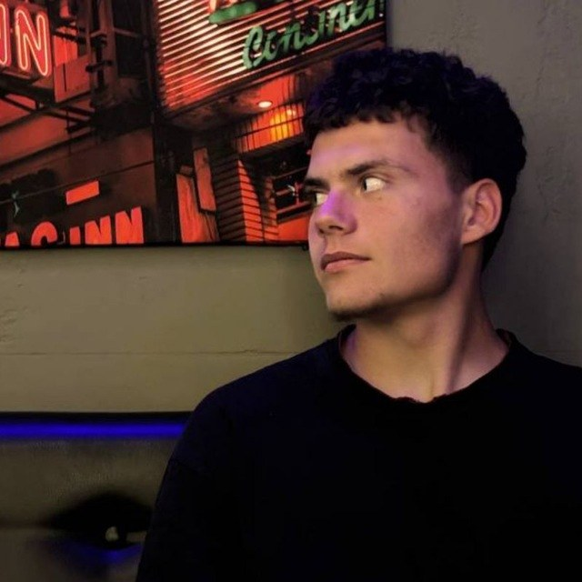
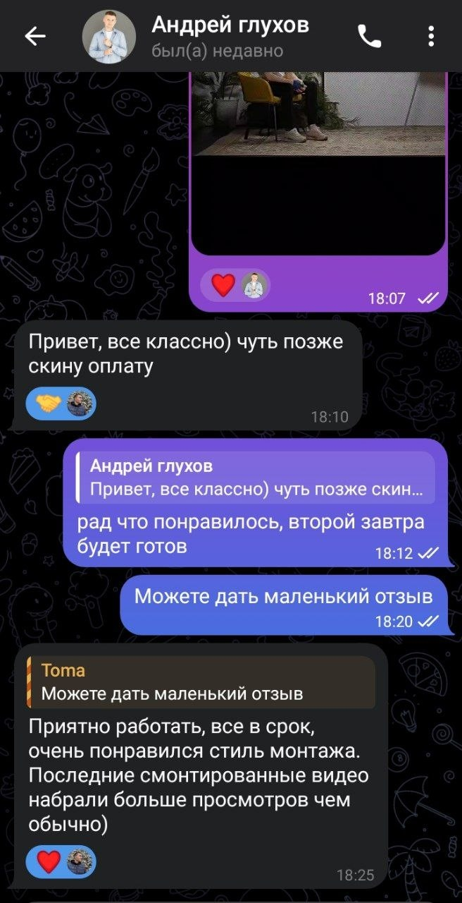
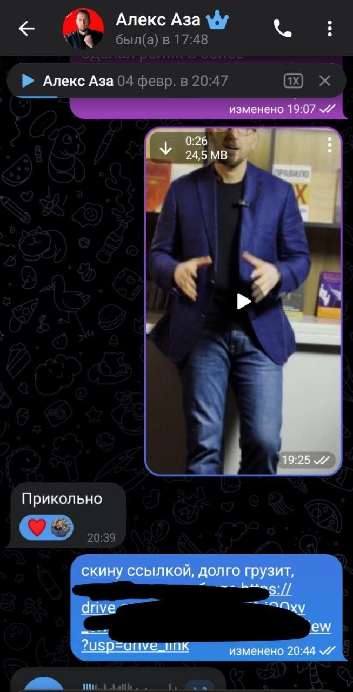
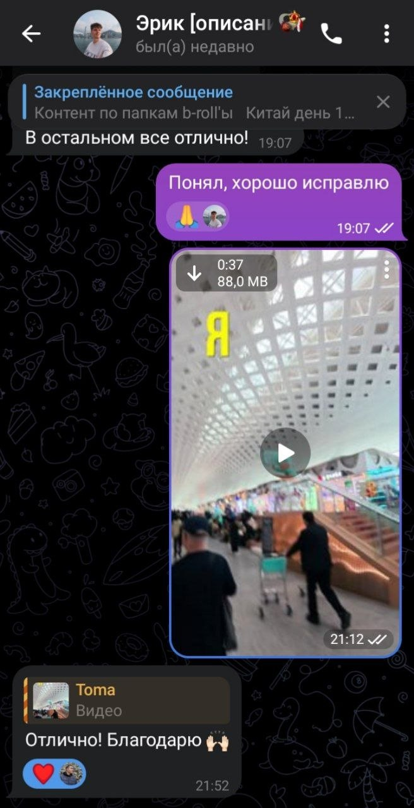

Education / Reels
JETMINDS
Reels для образовательного проекта. Динамика, ритм и удержание внимания.
Video Editor · Motion · Short-form
Создаю reels, shorts и вертикальный контент для экспертов, брендов и бизнеса. Работаю с ритмом, звуком и подачей, чтобы ролик выглядел как цельный продукт.
Selected work
Проекты с акцентом на динамику, удержание внимания и аккуратную визуальную подачу.
Education / Reels
Reels для образовательного проекта. Динамика, ритм и удержание внимания.
Podcast / Short-form
Вертикальный контент для подкаст-студии. Темп, sound design и вовлечение.
Business / Podcast
Reels из подкаста с фокусом на удержание, динамику и современную подачу.

About
Монтирую reels, shorts и вертикальные ролики. Помогаю экспертам, брендам и бизнесу делать видео, которые выглядят современно и удерживают внимание с первых секунд.
Использую Premiere Pro, After Effects, sound design и motion graphics, чтобы превращать исходники в законченный визуальный продукт.
Process
Определяем формат, стиль, темп и подачу под площадку и задачу.
Структура ролика, ритм, переходы и работа на удержание.
Атмосфера, звуковые акценты и чистый, ровный звук.
Цвет, субтитры, графика и адаптация под платформу.
Testimonials



Contact
Reels, shorts, подкасты и вертикальный контент для экспертов, брендов и бизнеса.
Telegram · @Tamalincev